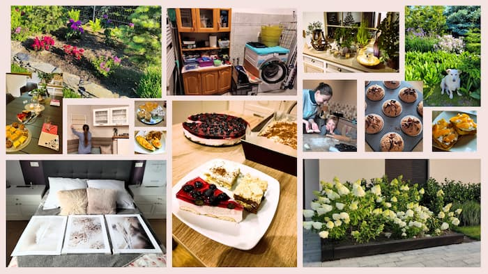

House chores
One may ask “House chores, are you serious?” Yes, that's right! I love taking care of my home, including cleaning it. I don't consider myself a proper house wife, as this expression seems old fashioned to me and often with a negative meaning. However, I admit that I find it really pleasing to take care of my surrounding.
My favourite house chores include daily tiding and organising stuff, decorating the inside, preparing everything for guests arrival and gardening (especially removing weeds). I don't consider myself a great cook, but I love baking in my free time, and (of course) enjoy eating after.
